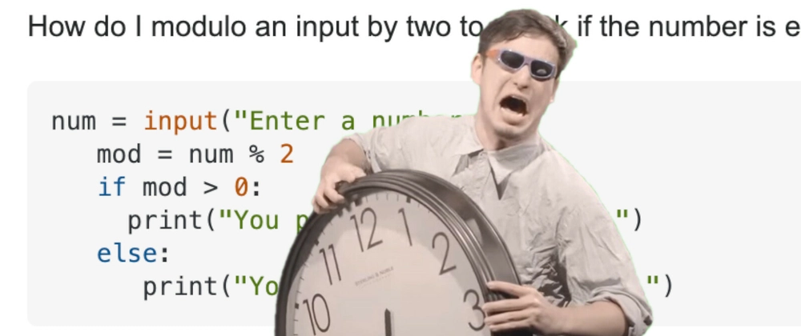
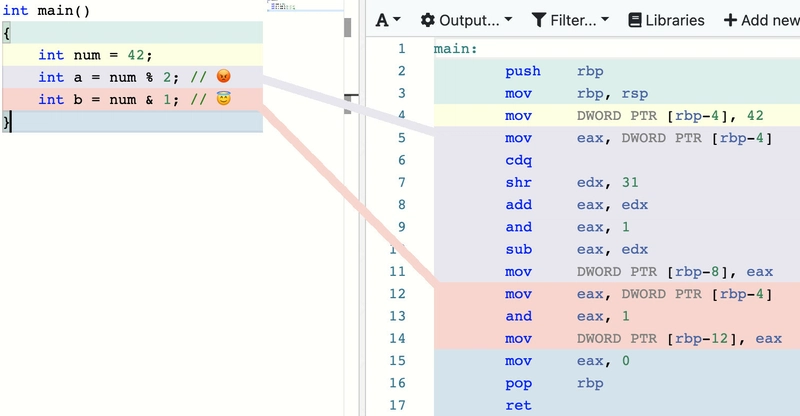
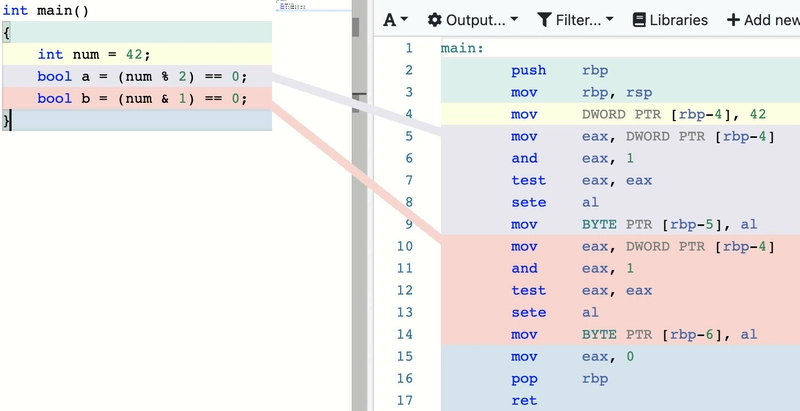

📅 04-Feb-2021
Article first published in Dev.to

Speed up your even-ness checks with this weird trick! 🙀
Oldest trick in the book, check if an integer is even or not. How do
you do it? A nice and simple num % 2 == 0 ?
That’s how most of us did it for a long time. Don’t even think about it, almost a reflex thing, am I right?
And that’s fine and all, it gets the job done. But here we like things lean and mean, and we like them fast.
First of all, why is modulo slow? Well, the modulo operation does more than just checking if a number is even or not, it returns the reminder of the division of both elements (and computers really hate dividing). This works for us because an even number will always have a reminder of 0 when divided by 2, but we are wasting precious sweet sweet CPU cycles.
But what other nice and useful property have even numbers? Their last bit is always 1. And how can we check the value of a single bit? With a beautiful and simple single-instruction binary AND
Here an assembly comparison:

And now the real plot-twist! All of this doesn’t really matter.
The compiler is smart enough to know when are you just checking if the number is even, and does the change for you!

But hey, at least you now know a little bit (hehe see what I did there) better how things work under the hood!